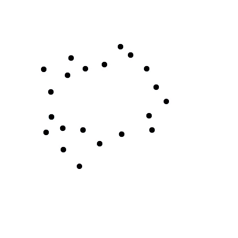
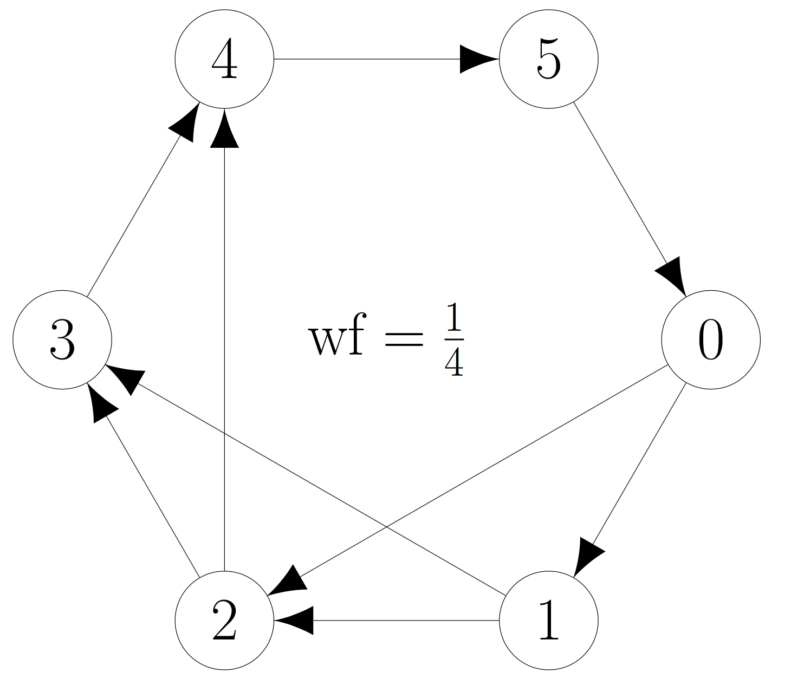
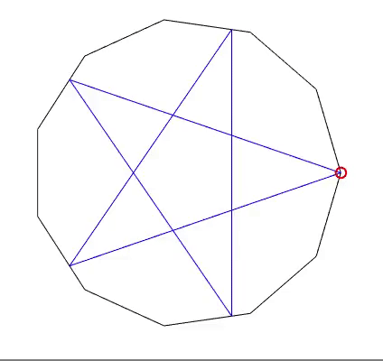

Welcome to the home page for this research project!
|  |  |  |
Use the sidebar to navigate the through the background, simulations, and animations that we have provided for the project. Our abstract is the following:
Abstract. Persistent homology has emerged as a novel tool for data analysis in the past two decades. However, there are still very few shapes or even manifolds whose persistent homology barcodes (say of the Vietoris--Rips complex) are fully known. Towards this direction, let \(P_n\) be the boundary of a regular polygon in the plane with \(n\) sides; we describe the homotopy types of Vietoris--Rips complexes of \(P_n\). Indeed, when \(n=(k+1)!!\) is an odd double factorial, we provide a complete characterization of the homotopy types and persistent homology of the Vietoris--Rips complexes of \(P_n\) up to a scale parameter \(r_n\), where \(r_n\) approaches the diameter of \(P_n\) as \(n\to\infty\). Surprisingly, these homotopy types include spheres of all dimensions. Roughly speaking, the number of higher-dimensional spheres appearing is linked to the number of equilateral (but not necessarily equiangular) stars that can be inscribed into \(P_n\). As our main tool we use the recently-developed theory of cyclic graphs and winding fractions. Furthermore, we show that the Vietoris--Rips complex of an arbitrarily dense subset of \(P_n\) need not be homotopy equivalent to the Vietoris--Rips complex of \(P_n\) itself, and indeed, these two complexes can have different homology groups in arbitrarily high dimensions. As an application of our results, we provide a lower bound on the Gromov--Hausdorff distance between \(P_n\) and the circle.
This research project was completed during Summer@ICERM 2017 by Henry Adams, Samir Chowdhury, Adam Jaffe, and Bonginkosi Sibanda, with funding by the Institute for Computational and Experimental Research in Mathematics ("ICERM") and Brown University.
Some presentations of this material include: